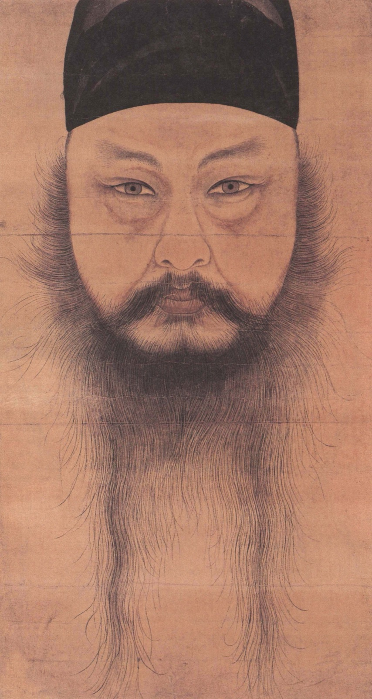
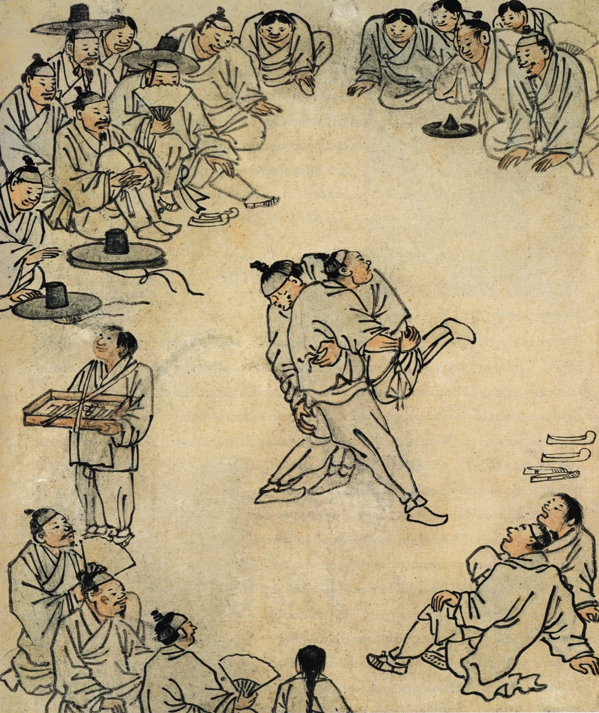
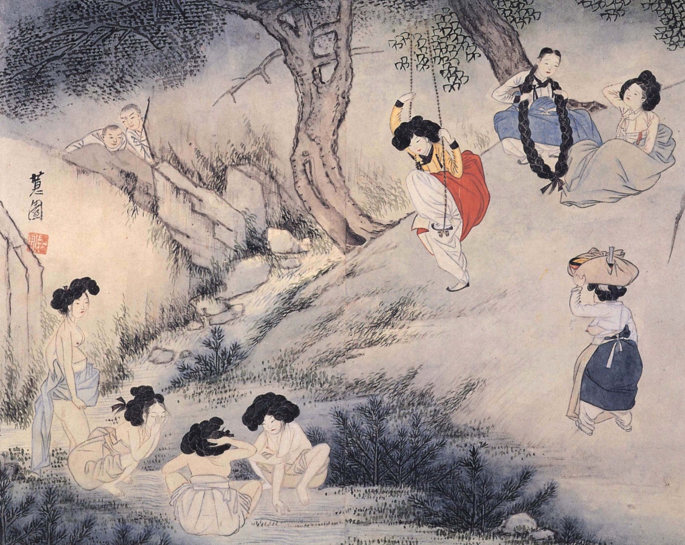

공지
- 8학년 감상수업이 「화론육법으로 감상하기」로 바뀌었습니다.
- 출제 작품 3점을 「학습내용」에 공개했습니다. 미리 공부하세요.
- 연습용 수행평가지와 학습지를 「수행평가지」 메뉴에 올렸습니다.
- 결석한 학생은 「일정·결석생」에서 보충 방법을 확인하세요.
이번 주,
수업 1에서 할 일
- 화론육법 6가지 기준 익히기
- 윤두서 「자화상」 설명 영상 보기
- 「자화상」 모범답안 읽기
- 김홍도 「씨름」으로 직접 써 보기오픈북 · 인터넷 검색 가능
평가 날에는
도판만 보고, 준비한 자료나 미리 작성해 놓은 메모를 보지 않고 작성해야 합니다
- 3개 작품 중 하나를 제비뽑기로 정합니다.
- 뽑은 작품의 도판을 보며 화론육법 기준 4가지로 씁니다.
- 필기도구는 자유, 빨간색만 안 됩니다.
- 휴대폰·유인물은 가방에 넣습니다.
각 반 평가 날짜
| 8-1 | 수요일 | 11월 25일 |
| 8-2 | 목요일 | 11월 26일 |
| 8-3 | 화요일 | 12월 1일 |
| 8-4 | 월요일 | 11월 30일 |
| 8-5 | 목요일 | 11월 26일 |

모범답안 윤두서, 「자화상」, 1710년경
3
출제 작품 3점은
추후에 공개합니다

